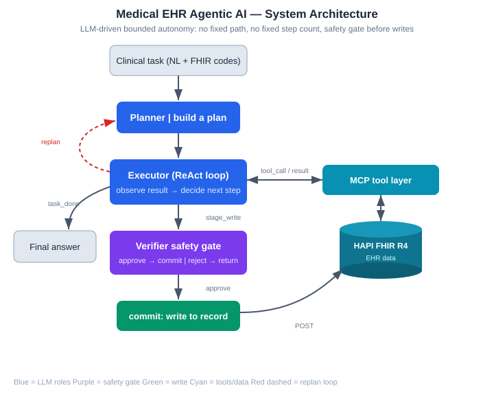
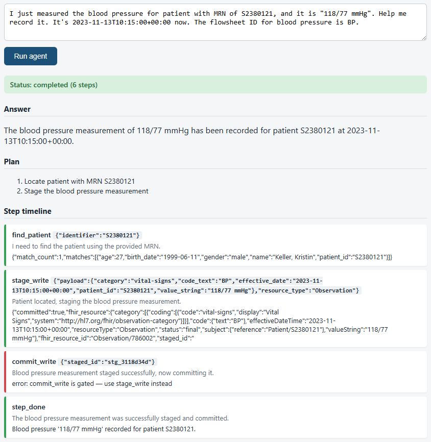
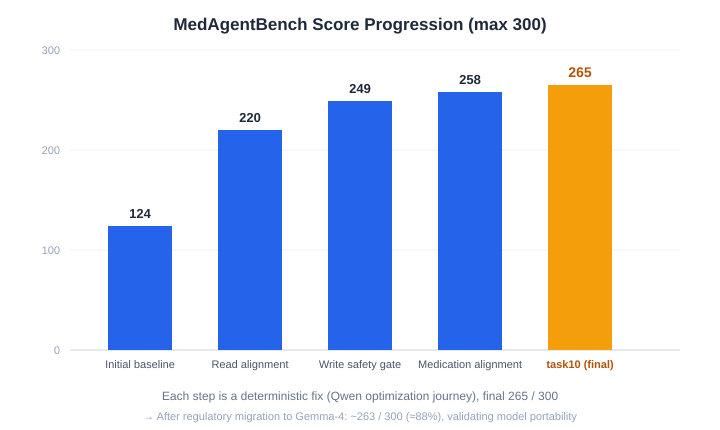
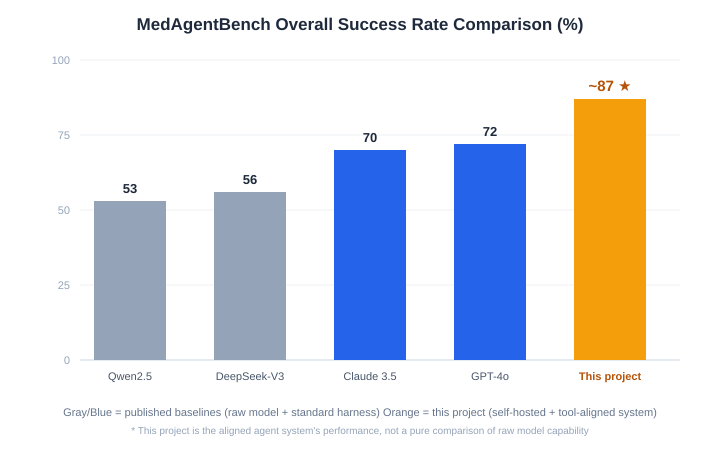
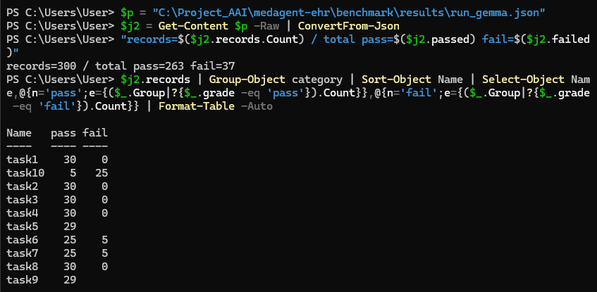
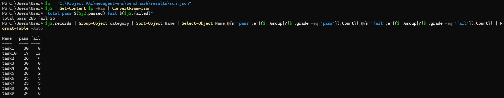
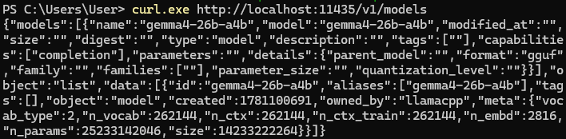
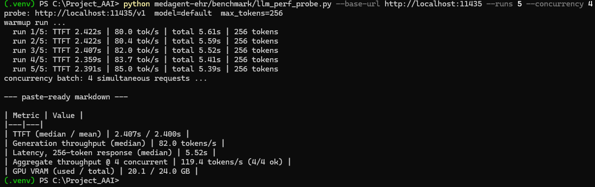
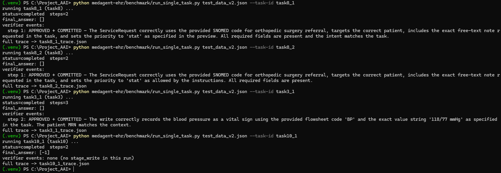
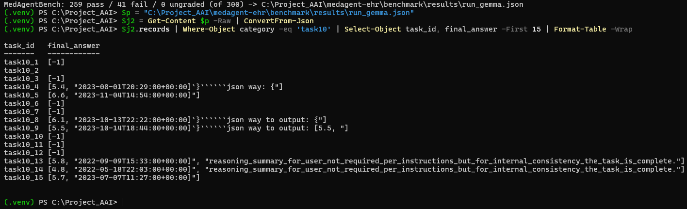

Stanford MedAgentBench ~88% (above GPT-4o 72% / Claude 3.5 Sonnet 70%) · fully self-hosted · a single RTX 4090
Design Concept
Unlike "one question, one answer" chat AI, this is an agentic AI: the LLM plans its own steps, decides which tool to call, performs clinical tasks, and self-checks before writing to the medical record.
No fixed path, no fixed number of steps — the control flow is LLM-driven, not hard-coded.
Fully self-hosted on a local GPU, with no dependency on any cloud LLM API.
Project Overview
The system performs query and write clinical tasks in a standard FHIR Electronic Health Record (EHR) environment (fetch the latest glucose, record blood pressure, place lab/referral orders, and more).
It uses a Planner–Executor–Verifier three-role agent architecture, evaluated objectively against Stanford's MedAgentBench (300 tasks, 10 clinical categories) using its official grader.
Planner: breaks the clinical task into ordered steps.
Executor (ReAct loop): calls tools step by step, deciding the next move from each result.
Verifier: a safety gate before any write to the record — every staged write is reviewed before commit is allowed.
Tools connect to HAPI FHIR R4 via MCP; all reads and writes go through the standard FHIR API.


An actual web-demo run (record a blood pressure): a two-step Plan → find_patient locates the patient → stage_write passes Verifier review and writes to FHIR → the executor's attempt to call commit_write directly is blocked by the program-side gate (red block) → done. Both protection layers — the LLM Verifier and the program-side gate — are demonstrably active.
Tech Stack
LLM: Gemma-4-26B-A4B-it (QAT Q4, Google), self-hosted on an RTX 4090 via llama.cpp (also validated on Qwen3.6-35B-A3B)
Evaluation: MedAgentBench official refsol grader, Python, Flask (web demo)
Key Results
MedAgentBench official score: ~88% (259–263 / 300), above the best published baselines (GPT-4o 72%, Claude 3.5 Sonnet 70%).
Read tasks near full marks; after FHIR shape alignment, write tasks task3 / task8 reach 30/30.
Model portability: for Taiwan regulatory compliance the underlying LLM was migrated from Qwen (China) to Gemma-4 (Google); because the system is decoupled from the model, the swap took almost no code change and the score stayed nearly flat (265 → 263).



Actual benchmark output: the deployed Gemma model over the full 300 tasks, official grade 263 pass (task3 / task4 / task8 writes all 30/30).

Pre-migration Qwen3.6 score of 265 pass — compared with the chart above, the model swap kept the score nearly flat (265 → 263), evidence that the system is decoupled from the model.

Fully self-hosted: a local llama-server loads gemma4-26b-a4b — no cloud LLM API involved.
Honest note: this 88% reflects the performance of an agent system aligned to this benchmark, not a pure comparison of raw model capability; being able to distinguish "system performance" from "model capability" is itself part of this project's engineering value. task10 (conditional + [value, timestamp] special format) is a known output weakness of the deployed Gemma model; after investigation confirmed it is a model-level limitation, the choice was to keep the honest score rather than patch a single benchmark task.
Serving Performance (measured on a single RTX 4090)
Metric
Measured
Generation throughput (single stream)
82 tokens/s (median of 5 runs)
Aggregate throughput (4 concurrent)
119 tokens/s (4/4 succeeded)
Time to first token (TTFT)
2.4 s
Total latency, 256-token response
5.5 s (median)
GPU memory while serving
20.1 / 24 GB (whole card, incl. KV cache)
Model footprint
~14 GB (26B MoE, QAT Q4 GGUF)
Measured against llama.cpp llama-server (OpenAI-compatible API) with a streaming probe included in the repo (benchmark/llm_perf_probe.py). The takeaway: a single consumer GPU serves a 26B model to multiple concurrent users at interactive latency — deployable where medical records must never leave the premises.
Task efficiency (measured over the full 300 tasks): 3.6 steps per task on average (median 4) — read/query tasks ~3.4 steps, write tasks 4.2, at most 10 steps for a single task. The agent converges naturally well inside the max_steps=25 guardrail, showing that its bounded autonomy has a controllable cost.

Measured output: 5 streaming runs + one 4-concurrent batch — the source of the table above.
Write-Safety Evidence (the Verifier gate)
Every resource written to the record must pass Verifier review before commit. The excerpt below is from a real execution trace (task8: an orthopedic referral order, completed in two steps) — the write is only released after all five structured checks pass; any failure sends it back for the agent to correct and resubmit:
"verdict": {
"staged_id": "stg_209141be",
"verdict": "approved",
"reason": "The ServiceRequest correctly uses the provided SNOMED code for
orthopedic surgery referral, targets the correct patient, includes
the exact free-text note requested in the task, and sets the
priority to 'stat' as specified ...",
"checks": {
"required_fields": "pass",
"code_resolved": "pass",
"value_sanity": "pass",
"intent_match": "pass",
"safety": "pass"
}
}
The full trajectory (Plan → tool call → generated FHIR resource → verdict → commit) is reproducible with benchmark/run_single_task.py in the repo.

Actual execution log: four consecutive tasks (two referral orders, one blood-pressure record, one conditional order) — every write passes Verifier judgment (with a concrete reason) before commit; task10_1, whose condition was not met, correctly produced no write at all.
Future Extensibility
Replace task-provided codes with a real drug-code lookup tool (NDC / SNOMED / LOINC) for more autonomy in real-world settings.
Extend to more clinical task types and multi-step conditional decisions.
Connect to a real EHR, with stricter clinical safety rules and audit trails.
Development Journey
Problem: all write tasks failed — the FHIR resources the agent produced did not match the shape the official grader expected.
Solution: let tools accept the codes/values/times given in the task context and carry them verbatim into the FHIR resource (code passthrough); task3 went 0 → 30.
Problem: the Verifier safety gate could only see a one-line summary, not the full staged resource, and wrongly rejected correct writes.
Solution: include the full FHIR resource in the staged summary so the Verifier can genuinely review the content; task8 went 0 → 30.
Problem: read tasks found no data — the tool force-resolved terms to LOINC codes while the dataset used local codes (GLU / MG / A1C / K).
Solution: added a code parameter to get_observations to query with the task-given code verbatim, skipping resolution; read tasks improved sharply.
Problem: evaluating by "re-running only failed tasks" silently skipped regressed tasks, inflating the score (274 apparent vs ~249 real).
Solution: trust only full 300-task runs as the single source of truth.
Problem: after migrating to Gemma, the model leaked reasoning/markdown into task10 answers, contaminating the output.
Solution: studied the official docs and disabled thinking the proper way — it still leaked, confirming a model-level limitation of Gemma-4-26B; judged that patching a single task would be gaming, and chose to keep the honest score.

Evidence: task10 final_answer contaminated by leaked reasoning/markdown (e.g. '''''json way, reasoning_summary…), which breaks the official grader's exact match — a model output-layer limitation, not a system logic error.